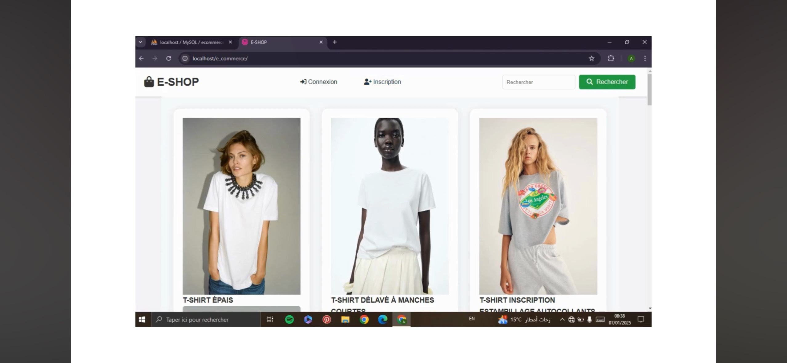
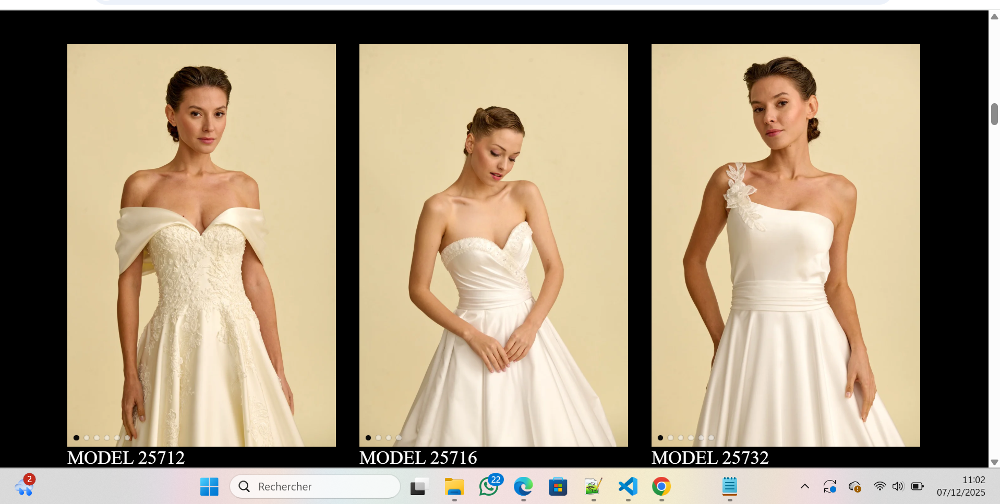
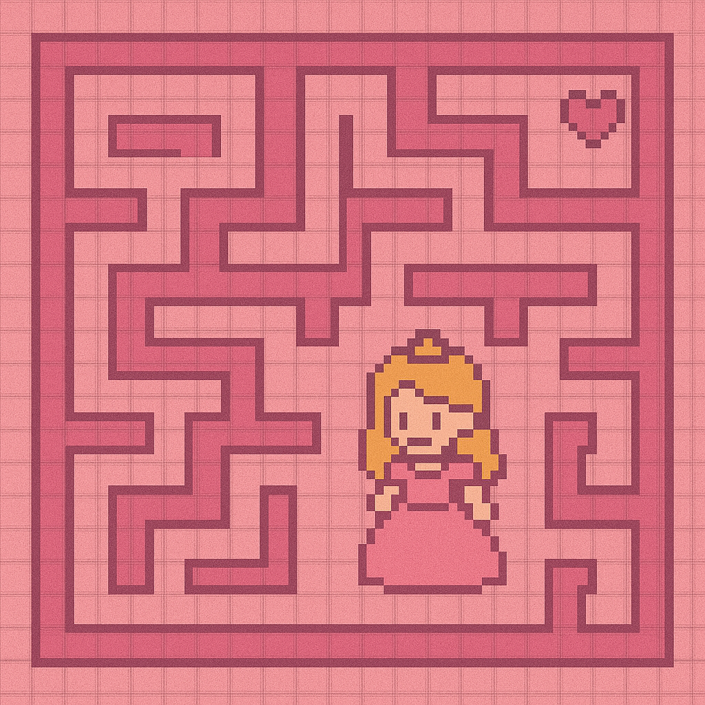
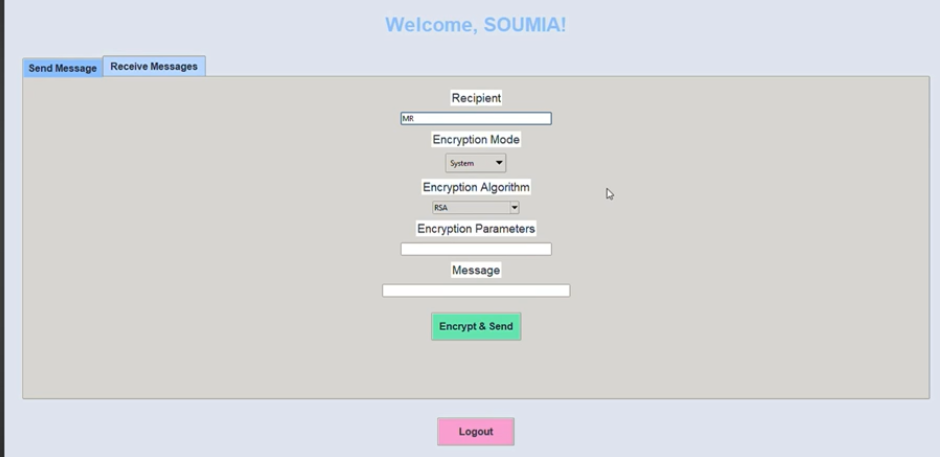

PHP/WEB
Site de Fast-Fashion
Site vitrine en HTML/CSS/JS avec pages produits,formulaire de contact et gestion basique des réservations.
HTML · CSS · JavaScript
Mes réalisations
Un aperçu de ce que j’ai construit pendant ma licence : sites web, projets de programmation, travaux en data et éléments de mon parcours académique et professionnel.
HTML, CSS, JavaScript, un peu de PHP… et beaucoup de rose.

Site vitrine en HTML/CSS/JS avec pages produits,formulaire de contact et gestion basique des réservations.
HTML · CSS · JavaScript

Mini site e-commerce avec pages produits, formulaire de contact et gestion basique des réservations.
HTML · CSS · PHP
Premiers pas dans le monde de la data pendant ma licence.

Réalisation d'un jeu labyrinthe en python en utilisant pygame
Python

solution de messagerie sécurisée conçue pour garantir la confidentialité des échanges grâce à des techniques de cryptographie modernes
Python
Ce qui m’a construite côté études, expériences et langues.
Analyse, algèbre, programmation (Java, Python), développement web.
Découverte de la programmation(langage c,java), initiation aux statistiques.